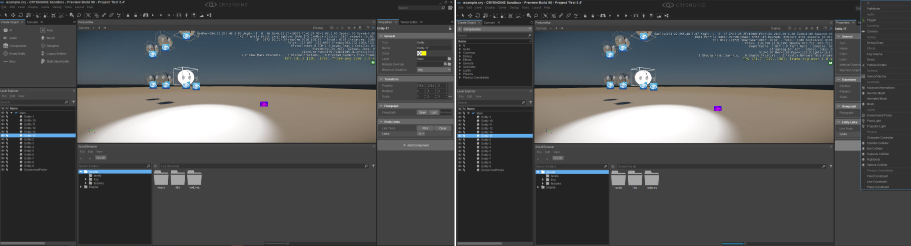

Обзор
Система Entity Component устраняет необходимость в игровом коде CRYENGINE для отображения и управления сущностями внутри сцены. Более того, система была разработана, чтобы предоставить разработчикам модульный и интуитивно понятный способ создания игр как на уровне системы, так и на уровне сущности.
Модель взаимодействия (в редакторе Sandbox) позволяет разработчикам создавать пустые (пустые) контейнеры Entity, которые, в свою очередь, содержат расширенную игровую логику, завернутую в определенные компоненты. Некоторые примеры базовых компонентов: сетка, освещение, ограничения и даже контроллеры персонажей. С помощью этих типов компонентов пользователи могут разрабатывать префабы, которые дизайнеры уровней могут размещать на протяжении всей игры как для стандартизации, так и для использования Schematyc для запуска и обновления событий.
Создание компонентов сущности
Шаги по созданию компонента сущности
- Откройте новый или существующий уровень Файл -> Создать или Файл -> Открыть
- Вам понадобится инструмент «Создать объект». Если это не отображается в верхней левой панели главного окна, вам необходимо сбросить макет. Для этого перейдите в строку меню Макет -> Сбросить макет
На изображении ниже мы открыли существующий уровень в проекте под названием Test 5.4. Обратите внимание: 1. инструмент «Создать объект» открыт и 2. параметры «Компоненты» и «Пустой объект» в инструменте «Создать объект».
- Компоненты сущности могут быть созданы двумя способами; 1. с помощью параметра «Компоненты» или 2. параметра «Пустой объект». Какой из них вы используете, зависит от пользователя и/или ситуации. Например, пользователь может выбрать параметр «Пустой объект», а затем добавить необходимые компоненты, или в случае, если пользователь знает, что ему нужен только компонент, скажем, аудио-триггер, он может выбрать один из вариантов «Компоненты».
- Компонентный метод. В инструменте «Создать объект» щелкните левой кнопкой мыши значок «Компоненты» — откроется меню «Компоненты». Разверните соответствующее меню, выберите необходимый Компонент, а затем перетащите и закрепите Компонент в вашей сцене (все это с помощью левой кнопки мыши). Компонент будет выделен, и теперь пользователь сможет установить соответствующие параметры.
- Метод пустой сущности. В инструменте «Создать объект» щелкните левой кнопкой мыши значок «Пустой объект», а затем перетащите и привяжите объект к вашей сцене (все с помощью левой кнопки мыши). Пустой объект будет выделен, однако теперь необходимо добавить компоненты (выполните шаг 6 ниже).
Примечание: Панель свойств будет видна на правой панели главного окна после добавления первого объекта на сцену, независимо от того, был ли это тип компонента или пустой объект. - Чтобы добавить компонент, нажмите кнопку + Добавить компонент Кнопка — открывает все доступные компоненты, которые можно добавить к объекту (правое изображение ниже).

- После того, как компонент выбран, вы можете выбрать значения для различных параметров в соответствии с вашими потребностями, конечно, параметры будут различаться в зависимости от типа рассматриваемого компонента.
- Объект можно редактировать в любое время, щелкнув левой кнопкой мыши по соответствующему объекту. Компоненты, как и сущности, можно удалить в любое время — эта функциональность не требует пояснений.
- Наконец, когда вы закончите, не забудьте сохранить уровень.